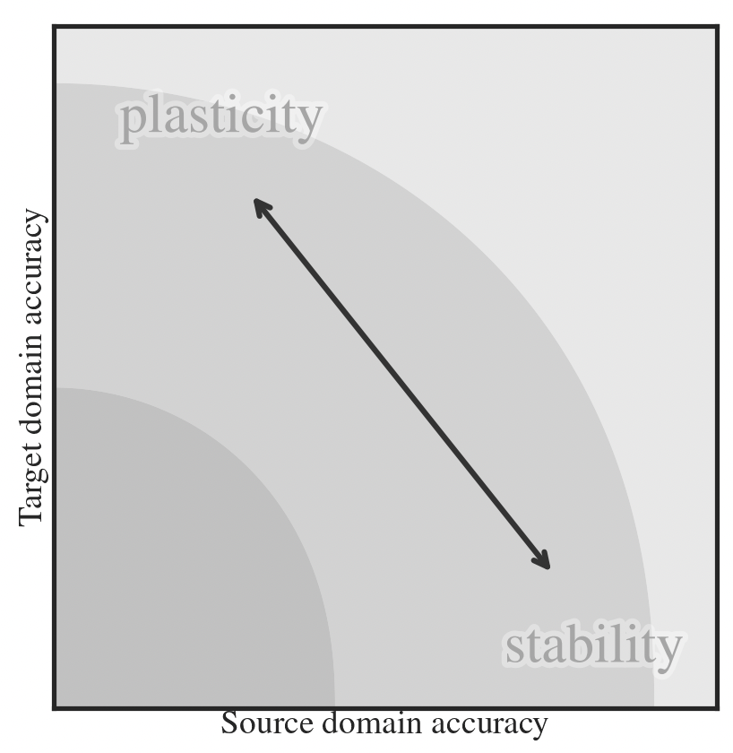

I work at the intersection of deep learning and probabilistic machine learning. I am studying the use of curvature-based Bayesian uncertainty to functionally enhance the training of neural networks. I'm based at the group of Philipp Hennig.
KEYWORDS:
RESEARCH:
The currently prevailing practice is to evaluate network performance solely by the attained final validation loss/accuracy. By acknowledging the probabilistic nature of the problem, constructing and leveraging uncertainty, I aim to generalise training to realistic and practically relevant settings like continual learning. This requires algorithmic advances to enhance efficiency through matrix-free, compressed, iterative linear algebra, but also the establishment of new design patterns in deep learning, like Kalman filtering on the weight-space.
Before my PhD, I was working in the field of causality, mainly exploring how to solve causal representation learning where the sources generate observations via a nonlinear transformation. During my education, I was studying various topics in computational neuroscience such as Brain Computer Interfaces, constructing 3D brain atlas and neuron simulation.
PREPRINTS:
-
 Efficient Weight-Space Laplace-Gaussian Filtering and Smoothing for Sequential Deep Learning
Efficient Weight-Space Laplace-Gaussian Filtering and Smoothing for Sequential Deep Learning
J Sliwa, F Schneider, N Bosch, A Kristiadi, P Hennig
2024 • arXiv
Imagine teaching a computer to spot tumor cells. As it learns from different hospitals, each with unique imaging styles, the computer forgets what it previously learned (e.g. in hospital 1, while learning images from hospital 5). Our method helps the model to remember its past knowledge while still learning new things efficiently.
PUBLICATIONS:
-

Mitigating Forgetting in Low Rank Adaptation
J Sliwa, F Schneider, P Hennig, JM Hernández-Lobato
Second Workshop on Test-Time Adaptation: Putting Updates to the Test! at ICML
2025 • OpenReview
Imagine specializing a language model for a new skill - say, learning another language or solving math problems. In the process it can forget earlier knowledge like grammar and common sense. We protect the knowledge the model is confident about and keep other parts flexible so it can still learn. Probing the Robustness of Independent Mechanism Analysis for Representation Learning
Probing the Robustness of Independent Mechanism Analysis for Representation Learning
J Sliwa, S Ghosh, V Stimper, L Gresele, B Schölkopf
First Causal Representation Learning Workshop at UAI
2022 • arXiv • GitHub
Imagine teaching a computer to separate single voices from recordings of multiple people speaking in a crowded room. The method IMA, inspired by the concepts from the field of causality, has shown good results. Our work checks if the method still works when the conditions aren't perfectly met.NEWS:
- 07/2025 attended and presented at PUT workshop at ICML in Vancouver
- 06/2024 started an ELLIS exchange at Computational and Biological Learning Lab at University of Cambridge with Miguel Lobato
- 04/2024 attended a Probabilistic Numerics Spring School in Southampton
- 09/2023 attended an ELLIS Doctoral Symposium in Helsinki and gave a tooling session about JAX
- 06/2023 started my PhD at Methods of Machine Learning Group at University of Tübingen with Philipp Hennig